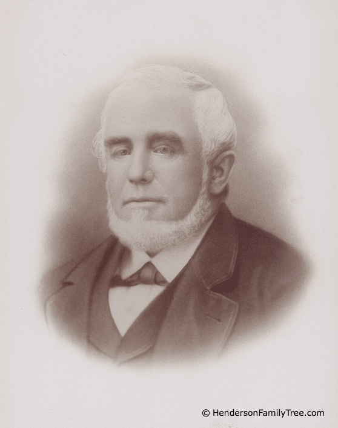

Photograph of Captain Joseph Henderson.
An original photograph from the Sandy Hook Pilots' Association
pilot's album, provided to the author in 2005. The photograph was taken in the early 1890s, and shows Captain Henderson in his pilot's uniform. The photograph is part of the author's collection of historical maritime photographs.
Close Window
Last updated: August 6, 2026